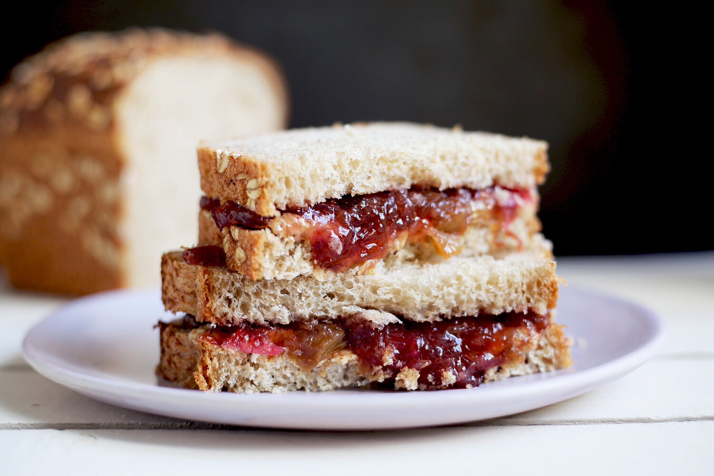

Peanut Butter and Jelly

Description
Craving a delicious peanut butter and jelly sandwich? Look no further, for you have arrived at the place to make these dreams a reality.
Ingredients
- White Bread
- Peanut Butter
- Strawberry Jelly
Steps
- First, toast your slices of bread
- Then spread peanut butter on both sides of the sandwich, this is crucial
- Then, place a healthy dollop of strawberry into the middle and form the sandwich
- This method keeps your bread safe from being made soggy by the jelly, and provides a much better ratio of PB to J.
Back Home